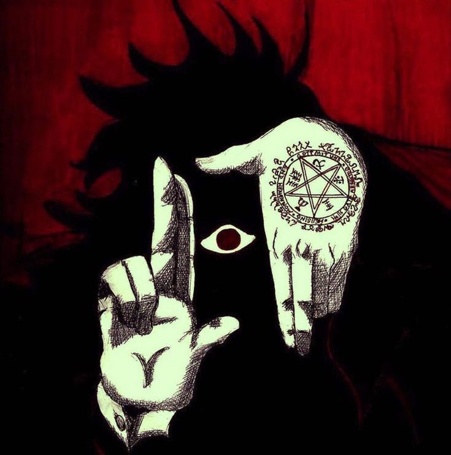
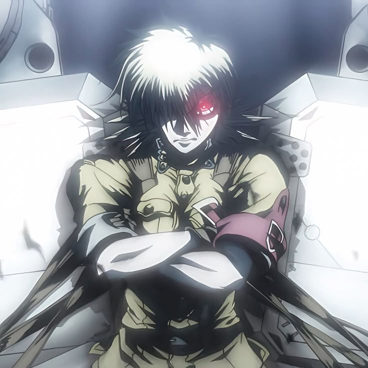

Anime Hellsing
Este sitio es un ejemplo de página web sobre el anime Hellsing una historia de vampiros, acción y misterio.
Personajes principales
- Alucard
- Sir Integra Hellsing
- Seras Victoria
- Walter C. Dornez
- Alexander Anderson
Pasos para empezar a ver Hellsing
- Buscar el anime en una plataforma de streaming
- Empezar con los primeros episodios
- Conocer a los personajes principales
- Continuar con la serie completa
Imagen de ejemplo


Más información sobre Hellsing
Video local
Trailer de Hellsing